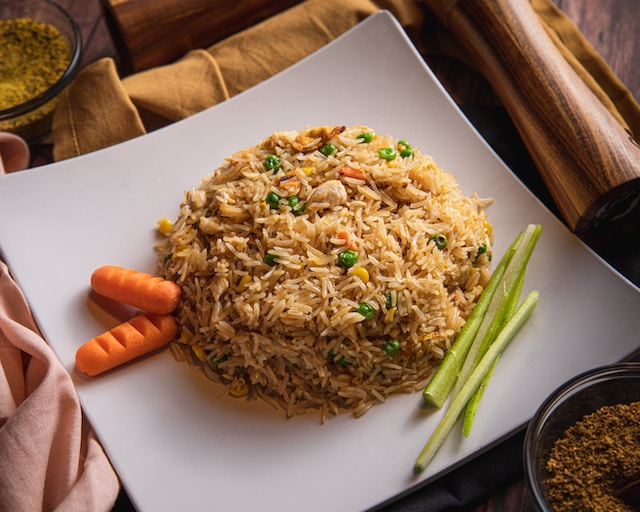

Fried Rice

Description
A staple in Chinese cuisine. Fried Rice is not only tasty,
but also easy to make.
Ingredients
- 2 cups of cooked rice
- 3 eggs
- 1 cup of peas
- soy sauce
- butter
- salt
- pepper
Steps
- Crack the eggs and put on pan to fry.
- Once the eggs are semi-cooked, place the rice onto the pan.
- Using a wooden utensil, mash the rice and eggs.
- Throw the peas onto the pan and mix.
- Add butter, soy sauce, and a pinch of salt and pepper.
- Mix until soy sauce and seasoning is evenly distributed.